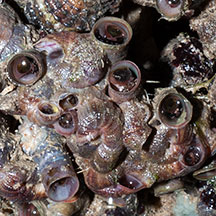
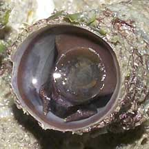
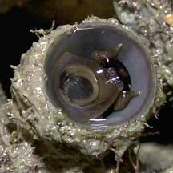
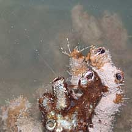
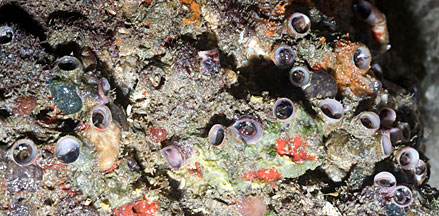

|
|
| shelled snails text index | photo index |
| Phylum Mollusca > Class Gastropoda |
| Worm
snails Family Vermetidae updated Oct 2016
Where seen? These odd-looking snails are seen coiled on rocks, stones and other hard surfaces. Commonly seen on our Northern shores. Often, the snail shell is covered with encrusting lifeforms, so only the shell opening is visible. Some snails of the Family Turritellidae also build coiling shells. Features: Tube opening 1-2cm in diameter, coils 10cm long or more. This amazing snail is NOT a worm. It builds a thin hard tube on hard surfaces. The worm snail has a pair of short thick tentacles, and a short foot. Some species of worm snails have a thin operculum attached to the foot that is used to seal the shell opening, others don't. As young snails, the shell they produce appears 'normal', and are free-living and unattached. But they soon attach to a hard surface and the shell produced becomes meandering and coiling. |
|
 Pulau Sekudu, Jul 13 |
 Changi, Apr 05 |
 Tuas, May 05 |
| Sometimes confused with keelworms (Phylum Annelida, Class Polychaeta) which are segmented worms that also build coiling hard shells on hard surfaces. Tubes made by worms such as keelworms are dull on the inside and made up of two layers. Tube worms have segmented bodies. Tubes made by snails such as vermetids are glossy on the inside because of a deposit of nacre, and made up of three layers. Vermetid snails do not have segmented bodies. Here's more on how to tell apart animals that make hard coiling tubes. |
 Feeding with mucus strands? Raffles Marina, Jun 02 |
 Often, the shell is covered in encrusting lifeforms and only the shell opening is seen. Punggol, Jun 12 |
| What does it eat? A worm snail
'nets' food from the water. A sticky mucus net is secreted from a
gland near the foot. This net can extend many times the body length.
Elsewhere, it was observed that a vermetid snail with a tube diameter
of 5cm had a mucus net 2m long! The animal gathers the mucus and eats
it together with whatever tasty bits are stuck on it. The vermetid
snail's digestive system is more similar to that of bivalves than
other gastropods. Worm snail babies: Male worm snails release their sperm in packets. Female worm snails 'net' these sperm packets in the same way that they gather food. As the sperm packets are hauled near the female's body, the sperm is released from the packet. Or the female may store the sperm to fertilise the eggs later. Eggs are retained inside the tube. They don't have a free-swimming stage and emerge out of the tube as little snails. After crawling about briefly, they cement themselves to a hard surface. Human uses: In Polynesia, they are a traditional food of some coastal people. |
| Vermetid snails on Singapore shores |
On wildsingapore
flickr
|
| Other sightings on Singapore shores |
| Family
Vermetidae recorded for Singapore from Tan Siong Kiat and Henrietta P. M. Woo, 2010 Preliminary Checklist of The Molluscs of Singapore. ^from WORMS
|
Links
|